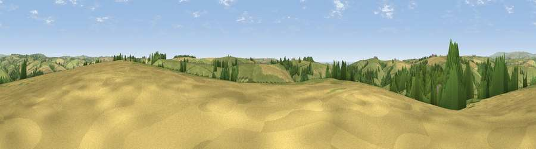

Viewpoint near Aveton Gifford
#19110 in England · top 42% of its area beats it · near Aveton GiffordThe view, rendered

A 360° render of this exact spot computed from the terrain model, tree cover and land cover — summer colours, afternoon light, calibrated against photographs of famous viewpoints. Real trees, hedges and buildings will differ in detail.
The panorama
Grey silhouette: terrain skyline in each direction (720 bearings, Earth curvature and refraction included). Dashed green: skyline with trees (+15 m) and buildings (+8 m) as obstacles. Blue strip: how far the ground is visible on each bearing.
Where the view opens
Wedge length = distance to the farthest visible ground on that bearing (vegetation-aware). Rings at 10, 25 and 50 km.
What fills the view
57% grassland · 24% cropland · 16% woodland · 1% water ·
Angular shares of the visible panorama (visual magnitude), not map area. Landscape diversity 0.45 (0–1 Shannon).
Key numbers
More beautiful places nearby
The staircase of upgrades: each row has a higher view potential than everything closer. Driving times are estimates from straight-line distance, calibrated against real road routing — check an actual route before setting out.
| Place | Direction | Drive | Score |
|---|---|---|---|
| Viewpoint near Thurlestone | SSW · 2 km | ~5 min | 71.6 |
| Viewpoint near Bigbury-on-Sea | WSW · 3 km | ~8 min | 76.8 |
| Viewpoint near Mothecombe | W · 6 km | ~13 min | 78.6 |
| Viewpoint near Hope | S · 7 km | ~15 min | 84.4 |
| Viewpoint near East Prawle | SE · 13 km | ~23 min | 84.6 |
| Pencarrow Head | W · 54 km | ~75 min | 86.0 |
| Viewpoint near Stenalees | W · 69 km | ~93 min | 88.0 |
| Viewpoint near Crackington Haven | NW · 74 km | ~97 min | 88.1 |
50.29773, -3.84450 · source: screening · position refined by local search. Computed location — check access rights before visiting.